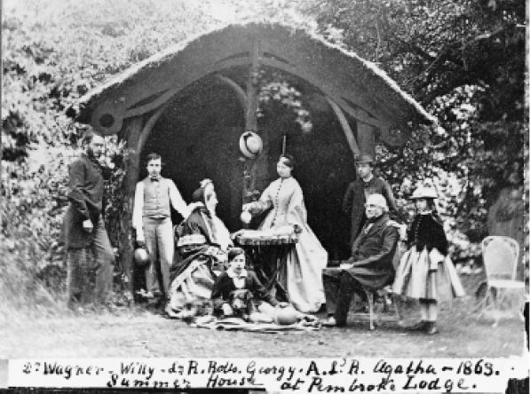
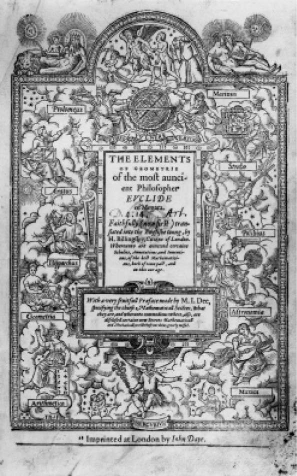
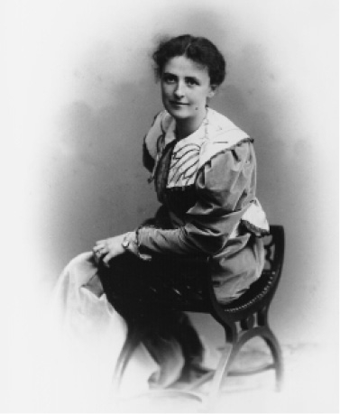
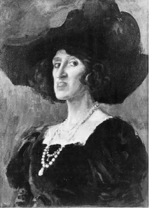
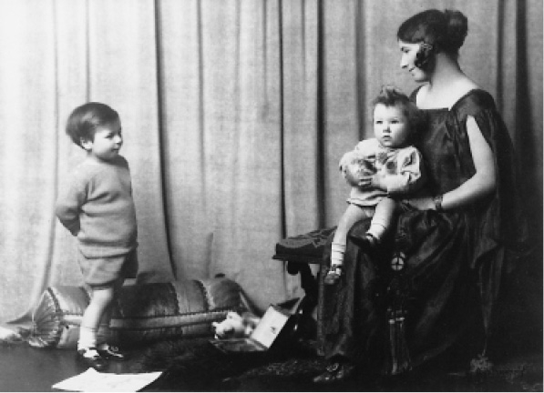

罗素是20世纪最著名的哲学家之一。他的名声（有时是不好的名声）主要是由于他参与社会和政治争论得到的。在差不多60年的时间里，他曾是一个大家熟悉的公众人物。在通俗的报章杂志上，他有时是个遭受诽谤的对象，而有时（在受到尊敬的时期）则是个权威性人物；在担当后一种角色时，他也曾上电台发表广播演说。他对于战争与和平、道德、两性关系、教育和人类幸福都发表过很多意见。他发表过许多通俗的著作和文章，他的见解给他带来了非常不同的反应，从被判入狱到获得诺贝尔奖。
但是他的最大贡献和声誉的真正基础却在逻辑和哲学这些专门领域。他对20世纪英语国家的哲学的内容和风格所产生的影响极其普遍而深入，实际上是无所不在。哲学家们使用他的著作所提出的技术和思想而不感到有必要提起他的名字（有时是认识不到有这种必要）；这才显示出真正的影响力。这样看来，他对哲学的贡献比起他的学生路德维希·维特根斯坦来要重要得多。哲学从维特根斯坦那里学到一些有价值的东西，但是从罗素身上却获得一个整体框架，构建人们现在所说的“分析哲学”。
在这个名称中“分析”的意思是指使用来自形式逻辑的方法和思想，对哲学上重要的概念以及体现这些概念的语言做出严格的分析。当然，分析哲学并不是单靠罗素一个人创建的。他曾受到逻辑学家皮亚诺和弗雷格以及他在剑桥的同事G.E.摩尔和A.N.怀特海的影响。其他影响则来自笛卡尔、莱布尼茨、贝克莱和休谟等17、18世纪思想家。实际上他的第一部哲学著作就是以同情的态度做出的关于莱布尼茨的研究。但是他把这些影响集聚起来，使之成为一种研究哲学问题的新方法，应用锐利的新逻辑来阐明这些问题。这就是说，他在革新20世纪英语国家哲学传统上起着至关重要的主导作用。
因此罗素既是一位被当作圣贤和人类导师的通俗意义上的哲学家，又是一位学术专业意义上的哲学家。在以下各章中我将讲述他以这两种哲学家面貌做出的贡献。在本章中我将概述他那漫长、丰富，有时还充满激荡起伏的一生，就其全部内容和多样性来讲，它构成了现代最崇高的个人传记之一。
伯特兰·阿瑟·威廉·罗素于1872年5月18日生于名门望族，属于贝德福德公爵家系中最幼的一支。他的祖父是赫赫有名的约翰·罗素勋爵，曾提议通过1832年的议会选举法修正法案，成为走向议会民主化的第一步。约翰勋爵曾两度任英国首相（1846至1852年，1865至1866年），并由维多利亚女王将其晋升为伯爵。罗素的外祖父奥尔德雷的斯坦利勋爵曾是约翰勋爵在政治上的盟友。

图1 罗素一家，1863年。照片中包括：家庭教师瓦格纳；伯特兰·罗素的叔叔威廉·罗素；罗素夫人；罗洛·罗素（另一个叔叔）；乔治（约翰勋爵在第一段婚姻中生下的女儿）；安伯利勋爵；约翰·罗素勋爵；阿加莎·罗素（伯特兰·罗素的婶婶）
罗素的父母是奇特而引起争议的一对，他们献身于进步事业，比如主张计划生育和争取妇女的投票权。他的父亲安伯利子爵选定约翰·斯图亚特·密尔作为他非宗教意义上的教父。密尔死时罗素还不满一周岁，所以对他的影响尽管很大，却是间接的。
安伯利曾当过短期的下院议员，但是他的政治生涯却因大家知道他支持避孕的看法而被葬送。安伯利夫妇的进步思想可以从他们聘请D.A.斯包尔丁作罗素兄长弗朗克的家庭教师这件事上看出来。斯包尔丁是一位聪慧的年轻科学家。他患有严重的肺病，因而不能结婚成家。安伯利夫妇认定这不是他必须独身的理由，所以罗素的母亲“让他同她一起生活”（照罗素在其《自传》中的说法）。罗素还补充说，“虽然我没有证据表明她这样做得到了什么乐趣”（《自传》，第12页）。
罗素的母亲和姐姐在1874年因患白喉症去世，当时他才两岁，紧跟着18个月以后父亲也离开人间。安伯利已经为他的儿子们找好两个不可知论者当他们的监护人，斯包尔丁便是其中之一。但是他们的祖父母（罗素勋爵和夫人）却极力反对。他们提出诉讼，想推翻安伯利的遗嘱，让孙子们在彭布洛克乡馆同他们住在一起。这座乡馆是里希蒙园中由皇家赏赐的宅邸。比罗素长七岁的弗朗克觉得那里的生活无法忍受，于是起而反抗。他被送到学校去住。伯蒂 [2] 则比较听话，性情又温和，就留在家中。仅仅过了三年，他的祖父便去世了，从此他就完全处在他祖母的影响之下。祖母是位古板严谨的苏格兰长老会教徒，是第二代敏托伯爵的女儿。罗素的性格往往被说成是受他贵族出身的影响，（在看来需要的时候）出身甚至可以成为性格的辩护理由。但是最早塑造他性格的却是他祖母的清教主义；它代表中产阶级的而不是上层阶级的维多利亚时期的风尚。她在罗素12岁生日时赠给他一本《圣经》，扉页上写下了她喜爱的一句箴言：“汝不应随众作恶。”这句话成了罗素终生信守的准则。
罗素的童年生活很孤独，但首先并非不快乐。他有德国和瑞士保姆，在很早的时候讲德语就同讲英语一样流利；他爱上了彭布洛克乡馆那片广阔的土地，从那里可以看到周围乡间的美景。他写道：“我熟悉花园的每个角落，我年复一年地去一个地方寻找报春花，去另一个地方寻找红尾鸲的窝巢，还有从一簇常春藤中长出来的刺槐花。”（《自传》，第26页）但是随着青春期的来临，不管在情感上还是理智上，他的孤独越来越让他痛苦。他在与他各方面都相距甚远的一家老人当中显得很孤单。前后更替的家庭教师是他与外面大世界唯一的脆弱联系。然而他还是靠大自然、书籍和稍后的数学才免于遭受精神上过大的痛苦。他的一位叔叔对于科学很有兴趣，并把这种兴趣传递给他，帮助激发他的精神觉醒，但是真正划时期的事情却发生在他11岁的时候，当时他的哥哥开始教他几何学。罗素曾说那种经验“同初恋一样令人眼花缭乱”（《自传》，第30页）。在他与理解前面的命题一样容易地掌握了第五命题之后，弗朗克告诉他说，人们通常觉得这个命题很难，这是有名的“笨人难过的桥”，它使许多刚刚开始的研究几何学的历程停步不前。罗素写道：“这是我第一次看清我也许有些智慧。”但是美中不足的是，欧几里得几何是从公理开始的，而当罗素要求对公理加以证明时，弗朗克就回答说，公理是必须承认的，不然几何学就不能展开。罗素勉强接受了这个意见，但是当时在他心中引起的怀疑却一直保留下来，决定了他以后在数学基础方面的工作进程。

图2 欧几里得最为著名的数学论著《几何原本》扉页
1888年罗素去陆军中一个专教考试功课的教师那里做寄宿生，准备参加剑桥大学奖学金考试。他在那里度过了一段不愉快的时光，因为他看到了有些年轻人的粗俗举止。然而他还是获得了上三一学院的奖学金，并于1890年10月入学攻读数学。
他觉得自己好像迈步走进了天堂。阿尔弗雷德·诺思·怀特海（日后罗素同他合作写出了《数学原理》）审阅过他考奖学金的试卷，嘱咐一些天资较高的大学生和讲师对他多加照顾。因此他觉得周围都是些志趣相投的人，思想上不再与人隔绝，而建立在相互交流的兴趣和智慧上的友谊也终于向他敞开了大门。
罗素在头三年中攻读数学，到第四年他进修哲学，教师有亨利·西奇威克、詹姆斯·华德和G.F.斯托特。黑格尔派哲学家J.M.E.麦克塔加特当时在剑桥学生和年轻教师中间很有影响。他引导罗素相信由洛克、贝克莱、休谟和约翰·斯图亚特·密尔所代表的英国经验主义失之“粗糙”，还把他的兴趣转向康德，特别是黑格尔身上来。在斯托特的影响下，罗素成了新黑格尔派牛津哲学家F.H.布拉德雷的推崇者，认真研读他的著作，后者倡导被称为“观念论”的哲学观点的一种说法。
但是对罗素起到决定性影响的却是一位比他年轻的同代人。这人便是G.E.摩尔，他同罗素一样，开始是个黑格尔主义者，但是不久便抛弃了这种哲学，并说服罗素也这样做。布拉德雷论证说，常识所相信的一切事物，例如由事物组成的世界的繁多性和变化都只是表象，而实际上实在却是单一的精神性质的绝对事物。罗素与摩尔都怀着欣喜若狂的解放了的感受驳斥了这种观点。虽然他们此后发展的道路各不相同，特别是罗素努力去找寻令人满意的其他观点，两人的哲学工作都完全以实在论和多元论（参见第34—35页关于这些名词的说明）作为前提。
但是摩尔领导的反叛来得较迟。1893年罗素在数学荣誉学位考试中获得甲等，名列及格者第七名。他在第二年的道德科学（在剑桥大学“道德科学”通常用来指哲学和经济学这类学科）荣誉学位考试中又取得甲等优异成绩。其后他便开始写一篇研究员资格论文，论述几何学的基础，这是代表他当时看法的康德主义习作。在这些令人兴奋的事件过程中，他已长大成人，因而可以不顾家人强烈的反对，自由去做他一直计划做的事情，即与艾丽丝·皮尔索尔·史密斯结婚。艾丽丝长他五岁，是美国贵格会教徒。他在1889年见到她，很快便产生爱情，尽管四年以后她才回报他的感情。罗素家人认为她非常不合适，告诉他说无论如何他不能生育子女，因为在他的家庭中有精神不正常的情况——伯父威廉曾因精神失常而进过精神病院，姑母阿加莎则有过妄想并且越老越古怪，这两件事都被举出作为证明。
罗素家人为了使他远离艾丽丝，安排他去巴黎任英国使馆名誉随员。他们无疑希望这个“道德败坏的90年代”首都的诱惑也许会满足驱使他走向婚床的任何冲动。但是他的祖母强加给他的清教徒式的教育总的说来是太有效了；这就扼杀了这个计划，他在家信（可以说是拘谨古板的典范）中抱怨巴黎人生活如何不好。他写道：“巴黎的每个人都很坏，人们只要看一下周围，便会见到某种对爱情的亵渎——这使我由于充满憎恶而颤抖。”等他能够支配自己的财源（他每年有一笔600英镑可观的遗产收入，他的新娘也有钱），他就立即同艾丽丝结婚，起初还生活得很幸福。

图3 艾丽丝·皮尔索尔·史密斯，美国贵格会教徒，罗素的第一个爱人。罗素17岁时与她相识，四年后，即1894年与她成婚
罗素的论文使他在三一学院获得一笔有一定期限的研究员补助金而不担任任何工作，即不必在剑桥教课和住在校内。因此他与艾丽丝去了柏林。罗素在那里研究了德国的社会民主并为此写出了一本书。这是他生前最早出版的一本书，是他总计达71本书和小册子（还不算他那些多不胜数的文章）这个了不起的著作数量当中的第一本。他在柏林萌发了要沿着两个方向进行一项庞大研究的想法：一是探讨自然科学，另外则是探讨社会和政治问题，两者最后汇合成一部“宏伟的百科全书式的著作”。罗素当时仍然受黑格尔主义的影响，这样一项计划正好显示出后者的特色；但是这项计划在他的哲学观彻底改变之后还是保留下来，尽管形式上没有这样系统化，因为在罗素的许多著作中，他确实写了大量既研究理论也探讨实际问题的论述。
《德国的社会民主》问世一年之后，他的研究员资格论文《论几何学的基础》也成书出版。随后在1900年罗素又出版了《莱布尼茨哲学评述》。他写这本书纯属偶然，但对他来说仍很重要。一位平常讲授莱布尼茨的剑桥同事请罗素代替他授课一年；罗素从来没有机会仔细研读莱布尼茨，却高兴地答应了这一邀请。这本书就来自他的讲稿。尽管罗素并不赞同莱布尼茨哲学的要旨，不过其中有些方面在他的思想中还是有影响的。
在罗素讲授莱布尼茨的时候，他已经被摩尔说服，放弃了观念论。不久之后他对于数理哲学的兴趣由于1900年7月在巴黎举行的国际数学大会上见到意大利逻辑学家朱塞佩·皮亚诺而得到有力的推动。确切地说他所关心的是能否为数学提供逻辑基础，从而使之成为确实可靠的知识这一问题。皮亚诺在逻辑上取得了某些技术性的进展，让罗素从中看到去完成将数学还原为逻辑这项工作的途径。他贪婪地阅读皮亚诺的著作，然后对其中包含的方法开始改进、扩展并加以应用。在最初感受的兴奋当中，他不出几个月便写出了后来证明是他第一部重要论著即《数学的原理》 [3] 的全部初稿。他又用了一年的时间进行修正和改进，并于1903年出版该书。罗素在为1937年该书新版写的序言中说，他仍然确信书中基本论点即“数学与逻辑是一回事”的真实性。
罗素在1900年所感受到的那种理智上的极度欣喜没有再次出现。首先，他以后的岁月由于个人生活发生的变故而显得阴云密布。他发现自己已经失去对妻子的爱情，并且告诉了她。他后来写道：“在那些日子里，我相信（什么经验教我这样想很可能并不确定）关系亲密的人应该讲真话。”（《自传》，第151页）结果两人在后来仍然住在一处的九年里都感到极其痛苦。大约就在同时，罗素由于亲眼看到伊芙琳·怀特海（他以前的教师阿尔弗雷德·诺思·怀特海的妻子）患病的痛苦而引起了他情感生活中的一场革命。看到她在强烈痛苦中所忍受的孤独，他的世界观突然改变了。从那个时刻起，他才有了和平主义和对孩子的渴望，才萌发出很高的审美感受力，才深刻认识到我们每个人归根结底而且无可挽救地都是孤独的。他在《自传》中对这次经验做了生动的描述。
在本来也许可以给他安慰的数学工作中，也出现了类似的严重波折。这就是在罗素力图完成的计划的核心部分发现了矛盾，这一矛盾及其重要性将在以下第二章中适当的地方加以讲述。其后果是让罗素的工作停滞了两年多的时间，当时他凝视着白纸不知道怎样写下去。在此之前他正撰写《数学原理》（Principia Mathematica ）一书，这原是想作为《数学的原理》（The Principles of Mathematics ）的第二卷来写的。这个预想的第二卷后来包括了对于《数学的原理》中简略表述的思想做出技术性的运算，还对其中留下来的一些困难进行更加充分的处理；但是情况很快就变得明显：如果他想达到计划的目的（即“证明全部纯数学都来自纯逻辑的前提并且只使用可以用逻辑来定义的概念”），还需要做很多工作。于是罗素邀请怀特海与他合作，从那时起直到1910年他的大部分心力都集中到撰写这部纪念碑式的著作上。该书的哲学方面和技术性内容的实际运算都由罗素承担；怀特海则主要在符号记法上做出重要贡献并完成了大量的证明。
罗素讲述他每年用八个月来写《数学原理》，每天花费十到十二个小时去工作。当稿子最后送往剑桥大学出版社时，稿纸竟多到必须用一辆四轮马车来运送。这个出版社的理事们估计这部书要使他们蒙受600英镑的损失，并说他们只愿意承受这笔损失的一半。罗素和怀特海说服英国皇家学会通过投票捐助200英镑，但是剩下的数目则要他们自己掏腰包。结果他们多年为这一宏伟计划所做出的劳动却让他们每人各损失了50英镑。
但是真正的回报却是丰硕的。在这项努力的进程中，并且根据努力的成果，罗素发表了一些极其重要的哲学论文。他在35岁还非常年轻的时候便当选为皇家学会的会员。他在逻辑史和哲学史上的地位已经确立下来。罗素后来在许多活动领域之所以能取得成就，大部分是由于他已经赢得了《数学原理》所赋予他的奥林匹斯山神的崇高地位。
在专心致力于理智活动的这些年月里，罗素在其他方面也没有虚度光阴。他对政治的兴趣仍然强烈；他参加支持自由贸易的运动，在1907年举行的温布尔登补缺选举中他还以议会候选人的身份公开赞同妇女选举权运动。投票选举妇女是一项极受非议的主张，拥护者经常遭到辱骂甚至暴力。罗素如果不是由于自己的不可知论挡路，他最后也许已经进入议会；在1911年选举中他就要当选为贝德福德候选人的时候，地方竞选组织突然得知他不愿向选举人隐瞒自己的不可知论并且不肯去教堂。于是他们选择了另外的候选人。
但是一件使他非常惬意的事情发生了：三一学院聘他当讲师，为期五年；因此罗素过上了大学教师的生活，他把注意力转到写一本后来成了经典的小书上面。这便是《哲学问题》，直到今天仍然是讲这个题目的最好的简明导论之一。
罗素从事政治活动的一个意想不到的结果竟是一段风流韵事。1910年他住在离牛津不远的地方，曾帮助当地候选人菲利普·莫雷尔进行竞选的游说活动。他在童年时期就认识莫雷尔的妻子奥托琳夫人。第二年他们的重逢竟发展成相恋。罗素愿意娶她，这就意味着他与艾丽丝离婚和奥托琳与菲利普离婚。但是奥托琳不愿离开菲利普，所以这件事只能算是通奸，得到菲利普的同意而受到艾丽丝和她家人的强烈反对。罗素与艾丽丝分手之后有40年之久未曾再度会面，虽说他们在这期间即1920年代早期离了婚。
奥托琳对罗素很有帮助，这是无可争辩的。罗素写道：“她在我的举止像一个大学教师或一个自命正经的人和在谈话中流露出独断傲慢时，便嘲笑我。她逐渐消除了我这种信念，即我心中充满了可怕的邪恶，只有靠坚强如钢的自我约束才得以压制下去。她让我变得不再那么自私，不再那么自以为是。”（《自传》，第214页）她还让他在她自己身上以及美丽的周围环境中得到审美冲动的满足。这时罗素的年龄已将近40岁；这是一次姗姗来迟但是却深刻的觉醒。
1914年罗素访问了美国，主要是去哈佛大学讲学。他的讲演后来以《我们关于外部世界的知识》为书名出版。他在哈佛大学的学生当中有T.S.艾略特，后者曾为罗素写了一首题为《阿波里奈克斯先生》的诗。在诗中他成了一个神话般的人物，样子奇特甚至吓人，那颗挂着一圈海草的脑袋也许会突然滚到椅子下边，或者突然咧嘴笑着出现在屏风上方；艾略特说，这个人物笑得“就像一个不承担任何责任的胎儿”，然而他那“干燥而充满激情的谈话”却消磨掉了下午的时间，让艾略特想起半人半马怪物的蹄子敲打坚硬的地面的声音。这是一次给艾略特留下强烈印象的会见；至于其他在场的人他只记得他们吃过黄瓜三明治。

图4 奥托琳·莫雷尔女士（1873—1938），奥古斯塔斯·约翰绘于1926年；帆布油画
在访问芝加哥的时候，罗素爱上了接待他的主人的女儿（他在《自传》中未曾透露她的名字），她当时是布林·莫尔学院的学生。他们定下计划让她到英国与他会合，以便在他与艾丽丝离婚后便可以同他结婚。她果然来了；但是当时第一次世界大战已经打起来了，大战对罗素在情感上的震撼以及他对和平主义活动的热情投入消除了他对她抱有的感情。她此行的灾难由于她后来发疯而更加深重。罗素在其自传中以痛悔的心情讲述了这段令人悲痛的插曲。
罗素对于大战爆发的反应是复杂的。他已经超过当战斗人员的年纪，所以他从来不是一个因良知而拒服兵役的人。（他的一些持有此种立场的熟人，如李顿·斯特拉奇等都去了奥托琳在加辛顿的乡间花园，终日闲荡，以摆脱强迫的农业劳动。）同许多爱德华七世时代的知识分子一样，罗素对于德国和德国文化有一种喜爱。他德语讲得很流利，读德文书自然不在话下，还去过德国并写了一本讲德国政治的书。但是他也有强烈的爱国心，他曾写道：“热爱英国几乎是我拥有的最强烈的感情。”他也不是一个无条件的和平主义者，这一点可以从四分之一世纪以后他竭力支持反对纳粹主义的战争看出来。关键在于他认为1914年战事的爆发不是为了一种原则而且并不预示有任何好处，而是由于一些政客的愚蠢惹起来的，眼看一场葬送年轻人生命的大混战就要把文明吞噬掉。他在战争开始后不久寄给《民族》杂志的一封信中写道：“所有这种疯狂，所有这种狂暴，所有这场葬送我们的文明和希望的熊熊大火，都是由一些官方人士造成的，他们生活奢侈，极其愚蠢，全都缺少想象力和爱心，宁可选择战争也不愿他们当中有人忍受对其祖国的荣誉一丝一毫的蔑视。”
图5 T.S.艾略特（1888—1965），罗素在哈佛大学的学生，曾写过一首关于罗素的诗——《阿波里奈克斯先生》。诗中的罗素相当神秘，头上挂着海草，一半是人一半是马
罗素在当时所表现的非比寻常的洞察力正如半个世纪之后在越南战争时所表现的一样。战壕里可怕的杀戮还未真正开始，而罗素却已看出其不可避免以及随之而来延续更久的后果。当时很少有人能预见到这一进程已经开始，即在本世纪剩下的大部分年代中世界大部分都被卷入了真正的或刚刚开始的战争之中，导致数以百万计的人死亡，大量资源用于发展军事工业技术，后者每一次新的进展都比前一次更加危险，破坏力更大。在1914年罗素当然不能预见到布尔什维主义、纳粹主义和大屠杀、原子武器和冷战、由国际军火贸易武装起来的国家主义，以及受富国与穷国之间令人不满的差距煽动起来的宗教激进主义，但是他却真实地感到战争的爆发意味着通向某种灾难的大门已经打开：接踵而至的便是一连几十年的灾难了。
同样使他感到恐怖的是在交战国家中民众对战争的普遍支持，所表现的那种“原始野蛮主义”以及“仇恨和嗜血本能”的发泄。正如他所指出的，这些正是文明自下而上所反对的事情。最糟的是他的大多数朋友和相识都有同样的思想感情。他不能袖手旁观；整个战争时期他一直在写文章，发表演讲，通过民主控制联合会和拒服兵役联谊会支持有组织的反战活动。在战争初期他为居住在英国的德国人做一些慈善工作，这些人由于与祖国隔绝而贫困不堪。这项工作的需要并没有持续很久，因为敌国公民不久便被拘留起来。
拒服兵役联谊会的领袖是一位名叫克利福德·艾伦的年轻人（即后来的赫特伍德的艾伦勋爵）。他由于拒不放弃反战活动而多次入狱。在对艾伦的一次审判中，罗素遇到了康斯坦丝·马勒森夫人，她是个女演员，艺名叫科利特·奥尼尔。她也从事和平主义工作，晚上在戏院度过时光，白天则在联谊会的办公室装信封。他们成了恋人，她的稳重镇静给战争时期进行艰苦斗争的罗素提供了一个庇护所。
罗素本人有好几次由于他的反战活动而遭到控制。1916年他因为写了一篇文章而被起诉，罚款100英镑。他拒绝付款，所以他的全部财物被扣押，但是他的朋友们出于好心将其买下归还给他，这就使他的姿态变得无效。随后他又被禁止进入英国任何军事禁区，特别是海岸部分（罗素以讽刺性幽默的口气猜想说，大概是为了防止他给敌方潜艇发信号吧）。1916年他打算去美国旅行，被拒绝签发护照。1918年被关进监狱六个月，原因是他写了一篇文章，说来欧洲的美国军队可能被用来制止罢工，这些军队在他们本国就是执行这种任务的。由于他的社会关系（他曾用带讽刺的口气说，当伯爵的兄弟还是有用的），他被关进第一监狱，这就意味着他住单人牢房而且可以看书；于是他读书写作，完成了一本书（《数理哲学引论》）并开始写第二本书（《心的分析》），还写出一些评论和文章。他在1918年9月获得释放，这时人们已经明显看到战争不会继续多久了。
罗素第一次被送上法庭还带了另外的处罚。三一学院所有年轻教师都已去前线打仗，留下一些岁数较大的人负责管理学院事务。他们对罗素的战时活动深怀敌意。当他们获知他的信念之后，便投票取消了他的讲师职位。数学家G.H.哈代曾为这样对待罗素而感到愤怒，后来还为此写了一篇文章。年轻的教师们在战争结束后回到了学院，他们投票恢复了罗素原来的职位。但这时罗素的兴趣已经把他引向了海外。
战争在罗素身上产生的许多变化之一便是他的写作范围的扩大。他在这几年中出了两本不属于哲学性质的书，即1916年出版的《社会改造原理》（该书的美国书名是《人为什么打仗》）和1918年出版的《自由之路》。这些都预示他以后会写许多讨论社会、政治和道德问题的通俗著作。就在1916年他将《社会改造原理》作为一系列讲演发表的时候，他遇见了D.H.劳伦斯并开始了一种有意合作的关系，但是劳伦斯的态度很快变得敌对起来。起初，劳伦斯指责罗素的和平主义，说这只是掩饰他对人类的强烈憎恶的面具，这使罗素深感烦恼，因为他认为劳伦斯对人性有一种特殊的洞察力；但是劳伦斯那些越来越歇斯底里和带谩骂口气的书信让罗素看穿了劳伦斯政治上的原始法西斯主义和他对非理性主义的崇拜。他们之间的关系也就中断了。
如前面所述，1918年罗素在狱中着手撰写两本哲学书。然而他重返哲学的时间却更早一些，因为在1918年头几个月他就以“逻辑原子主义的哲学”为题目做了一系列讲演，很快便在一个名叫《一元论者》的杂志上连载发表。罗素为人一向极其宽宏大度，说他的思想来自路德维希·维特根斯坦，后者战前在剑桥有很短一段时间作过他的学生。实际上罗素讲演中的大部分思想显然都是在遇到维特根斯坦很久以前就有的；但是两人在战前曾经详细地讨论过这些思想，这一点可以从维特根斯坦在前线奥地利军队中服役时写成的《逻辑哲学论》中看出来。这时罗素接到在意大利战俘营中消磨时光的维特根斯坦寄来的一封信，谈到《逻辑哲学论》这部著作。维特根斯坦从意大利人那里获释之后，便设法出版此书，但未能成功；于是罗素伸出援助之手，同意写一篇引言说服一家出版商接受出版。尽管罗素还有好几次对维特根斯坦提供关键性帮助（特别是十年以后为他在三一学院安排研究工作），两人还是由于气质上和哲学上的深刻不同而分道扬镳。
罗素又一次陷入了热恋之中，这次是爱上了一位年轻的格顿学院的毕业生，名叫多拉·布莱克。1920年他们各自单独访问了苏联，回来时多拉对苏联表现出热情而罗素则充满敌意。他写了一本责骂布尔什维克的书，为此他还和多拉争吵过。但是这并没有妨碍他们在1921年一起去中国，罗素受到邀请到北京作为期一年的访问教授。
同许多在中国待上一段时间的人一样，罗素也爱上了这个国家。同这许多人中的大多数一样，他也喜欢把中国人本身浪漫化。他称赞他们的幽默感、洞察力、对美好事物的欣赏以及对文化和学问非常文雅的喜爱。但是不知为何他看不到这个幅员辽阔的国家中大多数人过着多么艰苦的生活，也看不到古代传统多么严重地压垮和阻碍了中国。他在中国期间，许多人问他中国人应该怎样生活、应该怎样思考和中国怎样才能摆脱贫困和封建式的分崩离析，对此他并不愿让自己作为一个可以提出忠告的人。美国哲学家约翰·杜威同时也在中国访问，他对这类问题就毫不犹豫地发表自己的意见，结果他的名声在今天的中国仍然比罗素大得多。圣贤的传统在中国是很深厚的；因此罗素失去了一个在中国多做贡献的机会。他写了一本书，讲出他对中国及其未来的看法，但是该书后来才在遥远的英国出版，不能代替他的客人们希望听到的圣言。他反而给他们讲授了数理逻辑。

图6 多拉·布莱克（1894—1986），格顿学院的一名年轻毕业生，1916年与罗素相识。两人坠入爱河，不过多拉直到1921年9月才接受罗素的求婚。两人生有两个孩子，即约翰·罗素和凯瑟琳·罗素
罗素在北京的逗留快要结束时，患了严重的支气管炎，几乎丧了命。由于某些日本新闻记者过于积极，竟然传出了他去世的消息；所以罗素得以读到他自己的讣告，包括一行登在教会刊物上打趣的话，让他特别开心：“可以谅解传教士们听到伯特兰·罗素先生的死讯，叹了口气，感到如释重负。”
艾丽丝终于同意离婚，所以罗素和多拉于1921年9月返回英国后便结了婚，此后不久他们的第一个儿子约翰·康拉德就降生了。两年以后又有了一个女儿凯特。罗素在1922年和1923年两次作为切尔西工党候选人竞选议会议员，但是没有成功。家庭的责任有压力；他需要去谋生计，所以放弃了从事议会政治的想法，专心致力于写作和讲演。最有收益的巡回讲演是在美国，在1920年代他去了四次。他出版的通俗著作有《相对论入门》《原子入门》《我的信仰》《论教育》《怀疑论集》《婚姻与道德》和《幸福之路》。其中有些书经济收益丰厚，有些书则招来非议，原因是表达了对性道德的自由观点。同时他也没有忽视哲学；他那本在狱中开始写的《心的分析》于1921年问世；1925年他受邀在剑桥主持塔纳讲座，这些讲演以《物的分析》为书名于1927年出版。他还写了一本名叫《哲学大纲》的导论性质的教科书。
孩子们的到来满足了罗素一个长久的心愿。孩子们给了罗素一个“新的感情中心”，在1920年代剩下的岁月里这个中心吸引住了他作父亲的兴趣。他在康沃尔买了一所住宅，让全家去那里消夏；在约翰和凯特到了上学年龄时，他和多拉便决定创立自己的学校，让孩子们按照他们认为最好的方式受教育。他们租用了罗素兄长位于英国南部丘陵草原上的乡间住宅，开办了一所学校，收进二十个年龄大体相同的孩子。宅院很大，周围有两百英亩原始森林，长着繁茂高大的山毛榉和紫杉，有多种包括鹿在内的野生动物来回跑动。从住宅向外远眺，景色很美。
尽管有这种理想和田园诗般的风景，这一实验最后还是失败了。学校经费从来不能自给；罗素写通俗书和报章文字以及他多次往返于大西洋两岸去做巡回讲演（他不喜欢海上旅行）主要也是为了资助学校的经费。多拉也去美国做了一次巡回讲演，但是她主要负责管理学校。教师人员是一个困难问题；罗素和多拉从来没有见到一贯实行他们的原则的教师，这些原则包括有纪律的自由：尽管有相反的说法，罗素的学校并没有让孩子们任意胡闹而搞得乱糟糟。他后来写道：“让孩子们不受管束就是建立恐怖统治，就是让弱者在强者面前怕得发抖，显得非常可怜。一所学校就像整个世界：只有靠管理才能防止残忍的暴力。”
另一个困难是学校吸引了很高比例的问题儿童，他们的父母原想把孩子送到别的地方，但是最后却不得不去试一下实验学校。罗素夫妇因为需要钱而接收了这些孩子，后来却发现他们给学校管理带来了很多困难。
可是最坏的情况还是给罗素的孩子们带来的影响。其他学生认为他们受到过分的优待，因为管理学校的是他们的父母；但是罗素和多拉为了做到公平，力图同对待别的孩子一样来对待他们，结果是约翰和凯特实际上得不到父母的照顾，因而受了罪。用罗素自己的话说，早期的家庭幸福“因此给毁掉了，取而代之的是尴尬和困恼”（《自传》，第390页）。
在第一次世界大战之后的岁月里，人们普遍希望以教育为手段来改造世界。举例来说，奥匈帝国的解体使奥地利受到致命的打击，许多青年知识分子投身教学，希望重新改造人类。其中就有卡尔·波普尔和路德维希·维特根斯坦。罗素也间接属于这个运动。但是，教学的实际情况和人的本性的难以管教不久便让他们感到希望落空，终于放弃。
1931年罗素的兄长弗朗克突然死去，由罗素继承伯爵爵位。随之他也继承了兄长的债务，还有义务付给兄长的三个前妻中第二位每年400英镑的抚养费。他对伯爵爵位抱有一点嘲笑的态度，但他并不反对通过各种方式使之派上用场，特别是用它可以理所当然地参加官方的论坛，在那里他发表反传统的独立见解本会产生极大的效果。然而他还是不常出席上议院的集会，保留着对英国阶级制度应有的一种蔑视。
大约就在这时，罗素的婚姻经受着来自办学的压力和夫妻双方都有的私通行为的严重考验。罗素并不反对多拉的私通行为，但是他不愿养育由此生下的孩子。多拉由于与一个美国情人相恋而怀了孕，生下的孩子最初登记为罗素的子女；后来，他在德布雷特氏贵族年鉴上看到孩子的名字列为罗素的后代，便起诉要求除名。由此看来，罗素还保留有一些看重家系的冲动。
离开学校并与多拉分手之后，加上从兄长那里继承下来的债务，罗素仍然必须靠他的一支笔谋生。他给美国赫斯特报刊撰写专栏文章，这项报酬丰厚的合作到1930年代初期便告结束，所以罗素不得不集中精力写书。1932年他发表了《科学观》，1934年又发表了他的最佳著作之一，一部题名为《自由与组织：1814—1914》的政治史。1935年发表了《闲暇颂》，1936年又发表了《怎样获得和平？》。在《怎样获得和平？》中，他重申他有保留的和平主义并重提他赞成世界政府的主张。但是到这本书面世的时候，他已经感到有必要对和平主义做进一步的限制，特别是面对他所看到的（正如前两三年在德国发生的事件所表明的）纳粹主义这样一种“十足令人震惊”的威胁的时候。到第二次世界大战爆发时，他已经决定必须毫不含糊地抵抗希特勒。
1937年罗素发表了《安伯利文献》，这是长达三卷的关于他父母生平的记录。他觉得这部著作“让人感到平静”，因为他钦佩并且深深同意他父母的激进观点，还对他们那个（在罗素看来）更有希望、更为宽阔的世界感到留恋，他们就曾在那个世界里为实现自己的观点而奋斗过。罗素在写这本书和《自由与组织》时，得到一位年轻女子的帮助。此人名叫帕特里夏（一般称呼她“彼得”）·斯彭斯，从前曾在他的学校教过课。彼得先是他的情人，后来在1936年成了他的第三任妻子。1937年他们有了一个儿子，取名康拉德。他们搬到一所离牛津不远的住宅；罗素去牛津讲课并与一些年轻哲学家进行讨论，其中就有A.J.艾耶尔。1938年他出版了《权力：一种新的社会分析》；他在牛津授课的讲稿成了他的下一部哲学著作，即1940年出版的《对意义和真理的探究》（最初定的书名是“语言与事实”）。
1938年罗素同彼得和康拉德去美国，应聘担任芝加哥大学访问教授。他虽然同那里的优秀学生和同事们（其中有鲁道夫·卡尔纳普）进行过令人兴奋的谈话，但他却与哲学系系主任合不来。他不喜欢芝加哥，说那是“一个天气很坏、令人讨厌的城市”。到了这年年底，罗素一家去了加利福尼亚，那里的气候总的说来要舒适宜人得多。罗素在加州大学洛杉矶分校授课。1939年夏天约翰和凯特也来加州度假，战争的爆发使他们无法返回英国，罗素就将他们安置在加州大学。
尽管这里有很好的阳光，他在加州大学还是不如在芝加哥大学愉快，因为教师和学生才智平庸，大学校长更让罗素感到特别讨厌。一年以后，他接受了去纽约市立学院担任教授的聘请。但就在他就职之前，人们以反宗教和不道德为理由掀起了一场针对罗素的恶意诽谤。发起人是一位主教派的主教，受到天主教徒的热烈支持，并且由于该学院的一个未来女生的母亲提出诉讼而引起大家的注意。这个名叫凯夫人的母亲说罗素在该学院的出现对她女儿的操行会造成危险。罗素不能向法庭申诉，因为诉讼是控告纽约市政府的，罗素本人并不是诉讼的一方。凯夫人的律师说罗素的著作宣扬“淫荡、纵欲、好色、贪欲、色情狂、激发情欲、不虔诚、偏见、说谎和不道德”。这种指责的理由之一是罗素在一本书中讲幼小的孩子不应为手淫受到惩罚。那位爱尔兰天主教法官比凯夫人的律师辱骂得更厉害。自然是凯夫人打赢了官司。
这场诉讼不仅煽动起整个纽约市和纽约州，而且促使全国都反对罗素。他被迫失去了在纽约的工作，起初也不能在别的地方找到教学职位，没有报刊请他写专栏文章。在战时状态下他不可能从英国得到财源。这样一来他就成了一个漂泊海外、失去生计的人，还有一家人要他养活。
罗素首先由于1940年哈佛大学慷慨邀请他去讲学，随后又得到费城百万富翁巴恩斯博士的聘请而得以摆脱困境。巴恩斯博士是一位热情的艺术收藏家，建立了一个主要从事艺术史研究的基金会。他与罗素订了一项为期五年的给基金会讲课的合同。罗素在一间挂满法国裸体画的屋子里讲课；这使他觉得很有趣，尽管与学院派哲学有些不协调。巴恩斯性格有些古怪，传闻常和工作人员吵架；罗素的工作期限还不到一半，他就突然发出解雇通知，理由是他认为罗素讲课准备得不好。后来这些讲稿以《西方哲学史》这一书名出版，从广为流传和金钱收入来看，这是罗素最成功的一部著作。罗素为对方毁约而提出控告，把讲稿交给法官审阅，官司打赢了。必须承认这部名著有些部分写得相当肤浅，让人与那位费城百万富翁产生同感。但在其他方面这部书却写得极其引人入胜，是纵论西方思想的一个宏伟概观，而富有启发性地将西方思想纳入历史背景之中也是其一大特色。罗素写这部书感到很愉快，这种乐趣也在行文上表现出来。他后来讲到该书时所说的话同样表明他知道其中的缺点。
罗素与巴恩斯关系破裂之后，《哲学史》的写作继续在布林·莫尔学院的图书馆中进行。将罗素请到该校是由于保罗·魏斯教授的善意帮助，当时他正等待英国驻华盛顿使馆批准他返回英国。三一学院已经给了罗素一个研究员的职位，加上《哲学史》颇为丰厚的预支稿酬，这就让罗素解脱了困难。在罗素冒着大西洋上德国潜艇攻击的危险乘船回国之前，他曾在普林斯顿做了短暂逗留，同爱因斯坦、库尔特·哥德尔和沃尔夫冈·泡利进行过一些讨论。
以后几年他在剑桥大学授课，1945年出版《哲学史》，1948年出版《人类的知识：其范围与限度》。这是罗素最后一部哲学巨著，由于未受到哲学界的重视而使他感到失望。他认为一个原因是维特根斯坦的思想在当时及其后一段时期相当流行。1949年是他称为登上“荣誉顶峰”的一年：他在剑桥大学的研究员职位改为无须授课的终身研究员；当选为英国社会科学院荣誉研究员；英国广播公司邀请他做第一次雷斯系列讲演；国王乔治六世授予他功绩勋章；下一年他又被授予诺贝尔文学奖，消息传来时正值他又一次访美途中。
罗素对被授予功绩勋章还是很高兴的，他去白金汉宫接受了勋章。国王乔治对于要温和有礼地给一个曾判过刑的反传统的通奸者授勋这件事感到有些为难。此外这个人（用他自己的话说）“长相很奇特”，所以他说：“你以前的某些行为，如果推而广之，是不恰当的。”罗素一下子涌到嘴边却又没说出来的回答是：“正像你的兄长”，指的是退位的爱德华八世；他换了个回答：“一个人的行为应该怎样全看他的职业而定。比如说邮差应该敲打街上每个有来信的家门，但是如果另外有人敲打所有的家门，他就会被人当作公害。”于是国王匆忙改变了话题（《自传》，第516—517页）。
罗素新获得的荣誉地位，特别是他长期反对苏联共产主义的立场，使他在寒气逼人的冷战中成了对英国政府有用的人。他以这种资格去德国和瑞典做讲演。在后一场合遇上水上飞机在特隆海姆港坠毁，迫使他游过冰冷的海水才脱险。而在前一场合则使他暂时当上英国武装部队的一员，这让他很开心。
罗素在1950年代去了很多地方（去过澳大利亚、印度，重访美国，还去了欧洲大陆和斯堪的纳维亚），一路上发表演讲并受到名人身份的招待。在跟彼得·斯彭斯分手三年以后，他同伊迪丝·芬奇这个长期的美国朋友结婚，到巴黎去度蜜月；即使在观赏这个城市风光的短途浏览中（两人都未曾以观光者的眼光来浏览过巴黎，因为他们都在这里居住过），人们还是认出了罗素，许多人都拥到他周围。
罗素的旅行与讲演总是会收集成书的。他主持的雷斯系列讲演后来以《权威与个人》为书名出版。1954年他发表了《从伦理与政治看人类社会》，其中收进他接受诺贝尔奖时的演讲。由于他获得的诺贝尔奖是文学奖（授奖词提到《婚姻与道德》），这就激发了他写小说的兴趣。1912年他写过一部小说，但并未打算发表；现在他写了《郊区的恶魔》和《名人的噩梦》这两部短篇小说集——说得更确切些是寓言故事，都有哲学或论战的含意。1956年他发表了《记忆中的肖像》，这是一组描述他所认识的名人的特写；1959年又发表了一部思想自传即《我的哲学发展》，总结他自童年起经历过的思想进展。
但是，任何人如果认为罗素已经进入官方权力体制之内并且愿意退下来去过备受尊敬的、清静的晚年生活，都是错误的；因为罗素看出世界正被一种令人恐怖而且迅速增长的危险所困扰，所以感到迫切需要抵御这种危险。这就是大规模杀伤性武器的扩散。从1950年代中期到他1970年2月去世，他一直以年轻人的热情参加反对核武器和战争的运动，甚至还受到又一次入狱的判决，鉴于他年事已高（当时他已90多岁），减刑为在监狱医院监禁一年。在生命的最后几年，他又遭到人们的厌恶和敌视，特别是因为他对美国在越南的行动做出了似乎过分激烈、判断有欠审慎，甚至有些歇斯底里的抨击。后来人们才知道他对美国战争罪行的控告都是根据大体正确的资料。罗素在做出这些努力的过程中，担任过核裁军运动的首任主席，出版了两本书（《常识与核战争》和《人类有前途吗？》），推动召开了帕格沃什会议，后来为了反对越南战争还同让–保罗·萨特一起组成国际战争罪犯法庭。
罗素最后十五年中的政治斗争将在下面第四章中详加讨论。在罗素生命结束之前，尽管年老体衰而且患病（但他直到最后都保持着活力而且思维敏捷，活到98岁高龄），他似乎随着时间又活得年轻起来；他的祖母给世界送来的是个老成持重的维多利亚时代的人，而他却变成了一个永远年轻的游侠骑士：诚实、不屈不挠、具有令人生畏的智力和伟大的写作才能。他利用自己的天赋（其中主要是他那锐利无比的推理能力和机智）同凶暴的人进行斗争。
那些受到公众注意的人在时间的远景中不是被放大便是被缩小了，大多数人缩小成山脚小丘（也就是成了脚注），而少数人则上升到巍峨的喜马拉雅山之巅。罗素便是一个高高站立在顶峰上的人。